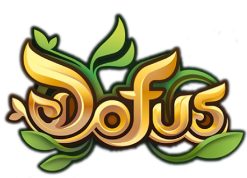
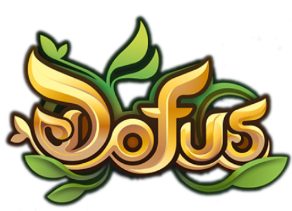

Coffre de guilde - 8 mars 2023
Bonjour à tous, avec la MAJ 2.67 sont arrivés les coffres de guilde. C'est un coffre commun. Il est important de noté qu'il peut contenir un maximum de 100 éléments. Ils sont disponibles dans toutes les banques du monde des douze ! Les règles d'utilisation de ce coffre seront définies ultérieurement.
ANKAMALIVE - 2.67 - 6 mars 2023
Lle replay du live concernant la mise à jour 2.67 est maintenant disponible sur notre site Web, dans la catégorie Événements. Les visiteurs de notre site peuvent maintenant accéder à la vidéo de l'événement et regarder le live à leur convenance.
Nous continuerons à publier des informations sur les événements à venir et les mises à jour de Dofus, donc n'hésitez pas à consulter régulièrement notre site Web pour rester informé.
Nous vous remercions de votre soutien et de votre intérêt pour Dofus.
 
